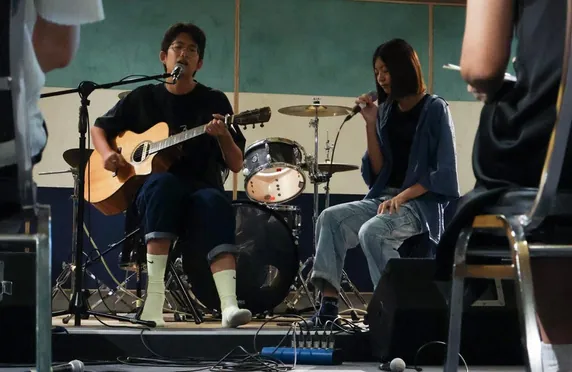

2.7萬
半個月內 帳號觸及數
8間
贊助廠商 市價 3 萬元資源
40組
創作團體參賽 12 組進決賽
1.5萬
單支影片 最高瀏覽
挑戰 Challenge
第三屆 Bm7 詞曲創作大賽限額 45 人，要在暑假兩個月內招滿參賽者、拉到贊助、辦完決賽——而且收益必須覆蓋成本。難的地方在於，這是一個從零開始的比賽帳號，沒有粉絲、沒有前例，要同時說服素人創作者報名、說服廠商掏錢、說服藝人老師來當評審。
我做的事 What I did
- 賽事社群：獨立負責比賽 IG 從零經營，短影音的策劃、腳本、拍攝、剪輯由我構想，發布超過 40 篇貼文與限時動態。
- 贊助洽談：籌備期拉到 8 間贊助廠商，總計獲得超過市價 3 萬元的贊助資源；事後主動製作結算報告，保障雙方權益並呈現效益。
- 評審協商：與藝人老師協商擔任決賽評審，鍛鍊對外溝通與議價能力。
- 活動系統：使用 Accupass 後台設計活動介面、資訊排版與內容呈現，並操作平台廣告投放。
- 現場執行：決賽當天負責現場配置、危機處理與參賽者溝通；參賽者表演照由我負責拍攝與調色。
- 品牌端：同時負責存在音樂官方帳號的短影音腳本發想與拍攝，撰寫知識型、促銷與導購貼文，包含粉紅導線產品推廣與「吉他保養場」知識系列。
學到什麼 Takeaway
這是我第一次完整跑一場活動的商業模型——收入要覆蓋成本、贊助商要看到回報、參賽者要覺得值得。事後的結算報告是我自己提議做的，因為我發現贊助商真正在意的不只是曝光數字，而是有沒有人幫他們把數字整理成可以交代的東西。這個「把成果變成可溝通的證據」的習慣，後來變成我做每個專案的預設動作。
作品與現場 Gallery・點擊放大